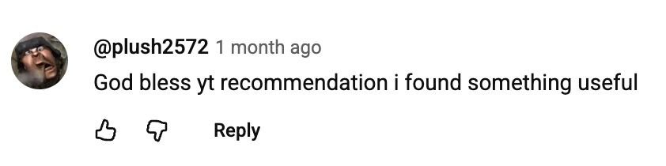

We have had a few tries at creating a podcast/video project (including before my time), but didn’t have the bandwidth or processes to get it off the ground. In an effort to become a beloved cult brand, I sought out how to get an edge over our competitors in the video space.
I found a podcast consultant and video-audio editing expert, and moved the podcast from idea to reality. Leaky Weekly is the only video podcast within our space of cybersecurity (Threat Exposure Management)! With an updated strategy, the YouTube shorts views have increased by 30%. When the host no longer had bandwidth for researching and script-writing, I recruited a researcher and reduced the host’s workload by 90%.
We have received positive comments on YouTube including:
